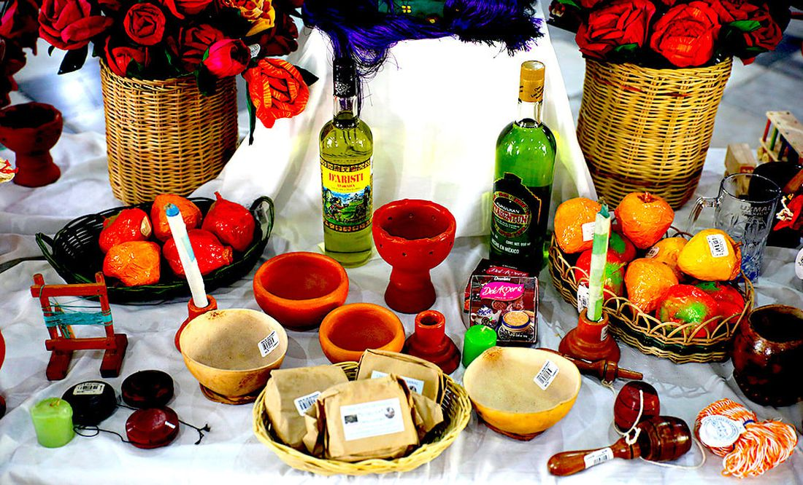
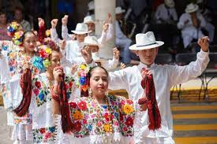
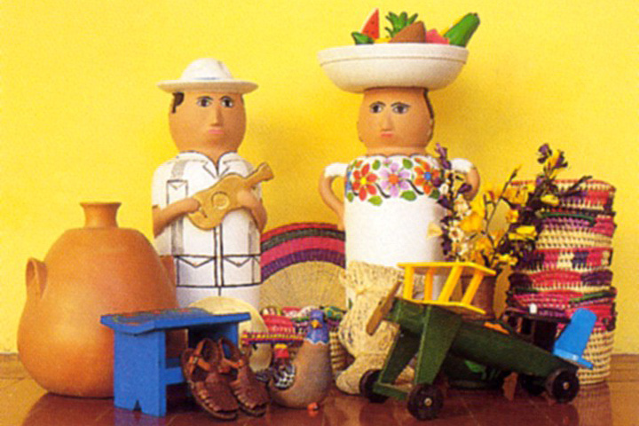

En Yucatán, las tradiciones están arraigadas en la rica historia y cultura Maya, fusionadas con influencias coloniales y contemporáneas. Aquí tienes algunas tradiciones características de la región:

Hanal Pixán: Esta es la versión maya del Día de Muertos, una festividad dedicada a honrar a los seres queridos que han fallecido. Las familias preparan altares decorados con flores, velas, fotografías y alimentos tradicionales como el mucbipollo, un tamal cocido bajo tierra.

Bailes folclóricos: Yucatán es conocido por sus coloridos bailes folclóricos, como la jarana y el baile de los muxés. La jarana es un baile animado que se acompaña con música en vivo de instrumentos como la guitarra y el arpa.
Procesiones religiosas: Durante la Semana Santa y otras festividades religiosas, se llevan a cabo procesiones en las calles de las ciudades y pueblos de Yucatán. Estas procesiones están llenas de fervor religioso y tradición, con participantes vestidos con túnicas y llevando imágenes religiosas.
Cocina tradicional: La gastronomía yucateca es una parte integral de su cultura. Platillos como el cochinita pibil, los panuchos, los salbutes y la sopa de lima son algunos de los manjares que se disfrutan en la región. Estos platos reflejan la fusión de ingredientes y técnicas de cocina mayas, españolas y caribeñas.

Artesanías: Los artesanos de Yucatán son conocidos por sus habilidades en la elaboración de textiles, alfarería, yucatán, hamacas y otros productos tradicionales. La artesanía local refleja la rica herencia cultural y las técnicas ancestrales transmitidas de generación en generación.

.jpg)
.jpg)